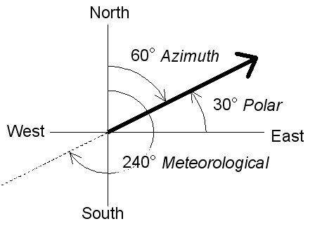
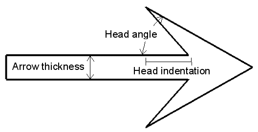
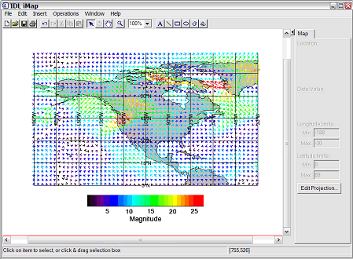
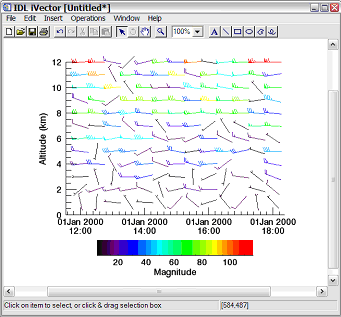
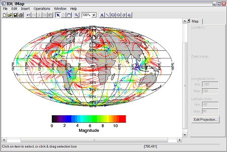

Note: Please see the VECTOR and STREAMLINE functions, which replace the functionality of this routine.
Note: If no arguments are specified, the IVECTOR procedure creates an empty Vector tool.
IVECTOR [, U, V [, X, Y]] [, ARROW_STYLE ={0 | 1}] [, ARROW_THICK = float {1.0 to 10.0}] [, AUTO_COLOR ={0 | 1 | 2 }] [, / AUTO_SUBSAMPLE ] [, COLOR = RGB vector ] [, DATA_LOCATION ={0 | 1 | 2 }] [, DIRECTION_CONVENTION ={0 | 1 | 2 }] [, GRID_UNITS ={0 | 1 | 2 }] [, HEAD_ANGLE = float ] [, HEAD_INDENT =float] [, / HEAD_PROPORTIONAL ] [, HEAD_SIZE = float ] [, / HIDE ] [, INSERT_COLORBAR = value ] [, LENGTH_SCALE = float ] [, MAX_VALUE = float ] [, MIN_VALUE = float ] [, IVECTOR = array ] [, / STREAMLINES ] [, STREAMLINE_NSTEPS = integer ] [, STREAMLINE_STEPSIZE = float ] [, SUBSAMPLE_METHOD ={0 | 1}] [, SYM_COLOR = value ] [, SYM_INDEX = value ] [, SYM_SIZE = value ] [, THICK =float {1.0 to 10.0}] [, TRANSPARENCY = value ] [, USE_DEFAULT_COLOR = value ] [, VECTOR_COLORS = vector or array ] [, VECTOR_STYLE ={0 | 1}] [, X_STREAMPARTICLES = integer ] [, X_SUBSAMPLE = integer ] [, IVECTOR = value ] [, Y_STREAMPARTICLES = integer ] [, Y_SUBSAMPLE = integer ] [, ZVALUE = float ]
A one or two-dimensional array containing the horizontal components of the vectors. If the X and Y arguments are provided, the vectors are plotted as a function of the ( x , y ) locations specified by their contents. Otherwise, the vectors are plotted as a function of the two-dimensional array index of each element of U .
A one or two-dimensional array containing the vertical components of the vectors. V must have the same dimensions as U .
A one-dimensional array specifying the x -coordinates for the vectors. If U is a two-dimensional array then X must have the same number of elements as the first dimension of U , where each element of X specifies the x-coordinate for a column of U ( e.g. , X [0] specifies the x -coordinate for U [0, *]). If U is a one-dimensional array then X must have the same number of elements as U , where each element of X specifies the x -coordinate for the corresponding element of U .
A one-dimensional array specifying the y -coordinates for the vectors. If U is a two-dimensional array then Y must have the same number of elements as the second dimension of U , where each element of Y specifies the y -coordinate for a row of U ( e.g. , Y [0] specifies the y -coordinate for U [*, 0]). If U is a one-dimensional array then Y must have the same number of elements as U , where each element of Y specifies the y -coordinate for the corresponding element of U .
Set this keyword to specify the style of the arrows. Possible values are:
|
0 |
Lines |
Arrows are drawn as an outline |
|
1 |
Filled |
Arrows are drawn as filled |
If VECTOR_STYLE is not 0 (Arrows) then this keyword is ignored.
Set this keyword to a value between 1.0 and 10.0, specifying the thickness of the arrow shaft. The default is 1.0 points.
Set this keyword to enable or disable automatic coloring of vectors or streamlines. Possible values are:
|
0 |
No automatic colors, or use the vertex colors if VECTOR_COLORS is provided (the default) |
|
1 |
Color according to magnitude, using the current color palette |
|
2 |
Color according to direction, using the current color palette |
If AUTO_COLOR is set to 1 or 2 then the VECTOR_COLORS keyword (and the vector colors parameter) will be ignored.
Set this keyword to enable or disable automatic subsampling of vectors. If automatic subsampling is enabled, then the X and Y subsampling factors will change depending upon the current view zoom. The default is disabled.
Set this keyword to the color to be used to draw the vectors. This color is specified as an RGB vector. The default is [0, 0, 0]. This value will be ignored if AUTO_COLOR is set or if VECTOR_COLORS is provided.
Set this keyword to specify the position of the vectors at each data location. Possible values are:
|
0 |
Tail |
Vectors are positioned so that the vector tail lies on each data location |
|
1 |
Center |
Vectors are positioned so that the vector center lies on each data location (the default) |
|
2 |
Head |
Vectors are positioned so that the vector head lies on each data location |
This keyword is ignored if streamlines are being displayed.
Set this keyword to indicate the convention to be used when displaying vector directions. Possible values are:
|
0 |
Polar |
This describes the direction counterclockwise from X axis, and is the usual physics convention (the default) |
|
1 |
Meteorological |
This describes the direction from which the wind is blowing, and uses terms such as northerly, westerly, and so on |
|
2 |
Wind azimuths |
This describes the direction towards which the wind is blowing, and uses terms such as southward, eastward, and so on |
|
 |
Set this keyword to an integer specifying the units for the vector grid. This keyword applies only when there is a map projection inserted. It has the following values:
|
0 |
None |
The vector grid is in arbitrary units that are not tied to a map projection (the default) |
|
1 |
Meters |
The vector grid is in meters, and is tied to a particular map projection. You are responsible for choosing the dataspace map projection that matches the vector map projection |
|
2 |
Degrees |
The vector grid is in degrees longitude/latitude, and the vectors will be automatically warped to the current map projection |
If GRID_UNITS is not set, but a map projection is present, then IDL will attempt to use the range of the X and Y parameters to determine whether GRID_UNITS is in meters or degrees.
Set this keyword to a floating-point value between 0 and 90 giving the angle in degrees of the arrowhead to the shaft. The default is 30.
Set this keyword to a floating-point value between -1 and +1 giving the indentation of the back of the arrowhead along the shaft. A value of 0 gives a triangular shape, a value of +1 will create an arrowhead that is just two lines, while a value of -1 will create a diamond shape. The default is 0.4.
|
 |
Set this keyword to make the size of arrowheads proportional to their magnitude. The default is to make all arrowheads the same size. This keyword is ignored for wind barbs or for streamlines.
Set this keyword to a floating-point value giving a scale factor to be used when drawing the arrow heads or feathers. The default is 1.0.
Set this keyword to a boolean value to indicate whether this object should be drawn:
|
0 |
Draw graphic (the default) |
|
1 |
Do not draw graphic |
If the newly-created visualization contains a color table (as specified by the RGB_TABLE keyword) set this keyword to automatically insert a colorbar. By default the colorbar will be positioned in the bottom center of the view. To manually position the colorbar, set this keyword equal to a two-element vector with values in the range (0 to 1) specifying the location of the bottom left corner of the colorbar in normalized coordinates.
Set this keyword to a floating-point value giving a scale factor for the length of arrows or barbs. The default is 1.0. This keyword is ignored if streamlines are being displayed.
Set this keyword to the maximum magnitude value to be plotted. Vectors which have a magnitude greater than this value are treated as missing data. The default is to display all vectors. This keyword is ignored for streamlines.
Set this keyword to the minimum magnitude value to be plotted. Vectors which have a magnitude smaller than this value are treated as missing data. The default is to display all vectors. This keyword is ignored for streamlines.
Set this keyword to the number of the predefined IDL color table, or to either a 3 by 256 or 256 by 3 byte array containing color values to use for the color palette. This color palette is used when either the AUTO_COLOR property is set or if VECTOR_COLORS is set to an array of color indices. The default is to use a grayscale ramp.
If this keyword is set then the UV field is drawn using streamlines with direction symbols.
If STREAMLINES is set, then set this keyword to an integer giving the number of steps to take for each streamline. The default is 100. This keyword is ignored for arrows or wind barbs.
If STREAMLINES is set, then set this keyword to a floating point value giving the normalized step size for each step in a streamline. The default is 0.2. This keyword is ignored for arrows or wind barbs.
If either X_SUBSAMPLE or Y_SUBSAMPLE are set to a value greater than 1, then set this keyword to specify the method used for subsampling. Possible values are:
|
0 |
Nearest neighbor (the default) |
|
1 |
Bilinear |
Set this keyword to an RGB value specifying the color for the missing-point symbols.
Note: This color is applied to the symbols only if the USE_DEFAULT_COLOR keyword is explicitly set equal to zero.
Set this keyword to an integer specifying the symbol to be used for missing points. Possible values are:
|
0 |
No symbol |
|
1 |
Plus sign, ‘+’ (default) |
|
2 |
Asterisk |
|
3 |
Period (Dot) |
|
4 |
Diamond |
|
5 |
Triangle |
|
6 |
Square |
|
7 |
X |
|
8 |
Arrow Head |
Set this keyword to a floating-point value from 0.0 to 1.0 specifying the size of the missing-point symbols.
Set this keyword to a value between 1.0 and 10.0, specifying the line thickness to be used to draw the vectors or streamlines. The default is 1.0 points.
Set this keyword equal to an integer between 0 and 100 that specifies the percent transparency of the vectors. The default is zero.
Set this keyword to use the color of the vectors for the missing-point symbols (this is the default). If this keyword is explicitly set to 0, the color specified by the SYM_COLOR keyword is used for symbols.
If VECTOR_COLORS is not of type byte, it is byte scaled into the range 0-255. This is useful if you have an auxiliary dataset (say of type float) and you want to color your vectors according to this auxiliary dataset.
Tip: IDL will remember the original data range of VECTOR_COLORS before byte scaling. If you insert a colorbar for the vector visualization, the colorbar axis will have the correct range for your auxiliary dataset.
Set this keyword to specify the style of the vector visualization. Possible values are:
|
0 |
Arrows |
Vectors are drawn as arrows with lines for arrowheads |
|
1 |
Wind barbs |
Vectors are drawn as wind barbs with feathers and flags |
If STREAMLINES is set, then set this keyword to an integer giving the number of streamline particles in the x direction. The default is 25. This keyword is ignored for arrows or wind barbs.
Set this keyword to an integer giving a subsampling factor to be used for the first dimension of U and V . This keyword is ignored if AUTO_SUBSAMPLE is true .
If STREAMLINES is set, then set this keyword to an integer giving the number of streamline particles in the y direction. The default is 25. This keyword is ignored for arrows or wind barbs.
Set this keyword to an integer giving a subsampling factor to be used for the second dimension of U and V . This keyword is ignored if AUTO_SUBSAMPLE is true .
Set this keyword to a float giving the Z coordinate to be used for the vectors or streamlines. The default is 0.0. If ZVALUE is non-zero, all vectors or streamlines will be plotted at that Z value, and the dataspace will change to three-dimensional.
A floating point value indicating the ratio of the Y dimension to the X dimension in data units. If this property is set to a nonzero value, the aspect ratio will be preserved as the visualization is stretched or shrunk. The default value is 0 for all visualizations except images, meaning that the aspect ratio is not fixed, but is allowed to change as the visualization is stretched or shrunk.
For 3-D graphics, a floating point value indicating the ratio of the Z dimension to the X and Y dimensions, in data units. If this is a nonzero value, the aspect ratio will be preserved as the visualization is stretched or shrunk. The default value is 0, meaning that the aspect ratio is not fixed, but is allowed to change as the visualization is stretched or shrunk.
Set this keyword to one of the following values to specify the axis style.
|
0 |
No axes |
|
1 |
Default Axes: at dataspace minimum values |
|
2 |
Box axes: at dataspace minimum and maximum values |
|
3 |
Crosshair axes: at dataspace median values |
Set this keyword to an RGB value specifying the color to be used as the background color for the view. The default is [255, 255, 255] (white). The BACKGROUND_COLOR keyword can be used when a tool is being created or when a new visualization is being created in an existing tool with the use of the OVERPLOT, VIEW_NUMBER or VIEW_NEXT keywords. The background color is applied to the current view. For example, if multiple views have been created with the VIEW_GRID keyword, and the VIEW_NUMBER keyword is used to create a visualization in the second view, use of the BACKGROUND_COLOR keyword would set the background color in the second view only.
Set this keyword to direct the graphical output of the visualization to a new data space in the current tool. If no tool exists, a new tool is created.
Set this keyword to the zoom factor to be used for the current view. The default value is 1.0, which represents 100%.
Set this keyword to a floating-point value giving the distance in the Z plane at which the objects in the view begin to fade into the background color. The values range from -1 (closest to the viewer) to +1 (farthest from the viewer). The default value is 0. See DEPTHCUE_DIM for examples.
Set this keyword to a floating-point value giving the distance in the Z plane at which the objects in the view have completely faded into the background color. The values range from -1 (closest to the viewer) to +1 (farthest from the viewer). The default value is 0. Some usage examples are:
Depth cue is disabled and no fading will occur.
Objects farther than Zbright will begin to fade into the background, and objects farther than Zdim will be completed faded. This is useful for simulating fog.
Objects closer than Zbright will begin to fade into the background, and objects closer than Zdim will be completely faded. This is useful for simulating lighting at a distance.
Set this keyword if values are specified in device coordinates (pixels) for the POSITION keyword. (Normalized coordinates are the default for these keywords.)
Set this keyword to a two-element vector of the form [ width , height ] to specify the dimensions of the drawing area of the specific tool in device units. The minimum width of the window correlates to the width of the menubar. The minimum window height is 100 pixels.
Set this keyword to disable the iTools splash screen. By default, the first time an iTool is run, the splash screen is displayed.
Set this keyword to automatically scale the newly-created visualization so that it fills the current view. This keyword is ignored if VIEW_ZOOM is present.
Set this keyword equal to an RGB vector specifying the title text color. The default is [0, 0, 0] (black).
This keyword applies only to the text annotation created by the TITLE keyword. It is ignored if TITLE is not specified.
Set this keyword equal to a string specifying the name of the IDL or system font to use for the title text. The default is “Helvetica”.
This keyword applies only to the text annotation created by the TITLE keyword. It is ignored if TITLE is not specified.
Set this keyword equal to an integer specifying the font size for the title text. The default is 16 pt.
This keyword applies only to the text annotation created by the TITLE keyword. It is ignored if TITLE is not specified.
Set this keyword equal to an integer specifying the font style to be used for the title text. Allowed values are:
|
0 |
Normal (the default) |
|
1 |
Bold |
|
2 |
Italic |
|
3 |
Bold Italic |
This keyword applies only to the text annotation created by the TITLE keyword. It is ignored if TITLE is not specified.
Set this keyword to a named IDL variable that will contain the iToolID for the created tool. This value can then be used to reference this tool during overplotting operations or command-line-based tool management operations.
Set this keyword to a three-element vector [ ncol , nrow , index ] to arrange graphics in a grid. The first dimension ncol is the number of columns in the grid, nrow is the number of rows, and index is the grid position at which to place the graphic (starting at element 1). This keyword is ignored if either OVERPLOT or POSITION is specified.
Set this keyword to a two-element vector of the form [ x , y ] to specify the location of the upper left-hand corner of the tool relative to the display screen, in device units.
Note: Some X Window managers explicitly ignore any request from the client for window placement.
Set this keyword to a scalar string or an array of strings that specifies the names of one or more macros to run. The macro names are retrieved and the macros are run sequentially after the iTool and (if applicable) any visualizations have been created. If a macro of the specified name does not exist, IDL generates an error and the routine exits.
Set this keyword to specify the current graphic’s margin values in the layout specified by the LAYOUT keyword. Set MARGIN to a scalar value to use the same margin on all sides, or set MARGIN to a four-element vector [ left , bottom , right , top ] to specify different margins on each side.
Margin values are expressed in normalized units ranging from 0.0 to 0.5.
This keyword is ignored if either OVERPLOT or POSITION is specified. If the DEVICE keyword is used, the values are given in device units (pixels).
Set this keyword to a string to specify the name for this visualization.
Set this keyword to cause the iTool not to prompt the user to save changes when closing the tool. The default is to prompt the user to save changes.
Set this optional keyword if input arguments are specified in normalized [0, 1] coordinates for the POSITION keyword. (Normalized coordinates are the default for these keywords.)
Set this keyword to an iToolID to direct the graphical output of the visualization to the tool specified by the provided iToolID.
Set this keyword to 1 (one) to place the graphical output of the visualization in the current tool. If no current tool exists, a new tool is created.
This iToolID can be obtained during the creation of a previous tool or from the iGetCurrent routine.
POSITION is a four-element vector that determines the location of the visualization within the iTool window. The coordinates x 0 , y 0 , represent the lower left and x 1 , y 1 , represent the upper right corners of the data space. Coordinates are expressed in normalized units ranging from 0.0 to 1.0. If the DEVICE keyword is present, the units are given in device units (pixels).
Note: When using POSITION, factor in enough space to display the title and axis labels. For example, if you use POSITION to place your visualization at 0 on the X or Y axis, any labels for that axis will not be visible.
Set this keyword to override the value specified by the IDL_GR_WIN_RENDERER (Windows) or IDL_GR_X_RENDERER (UNIX) preference for the iTool. IDL will use the specified graphics renderer when drawing objects within the iTool window. Valid values are:
|
Value |
Description |
|
0 |
Use platform native OpenGL |
|
1 |
Use IDL’s software implementation |
If your platform does not have a native OpenGL implementation, IDL uses its own software implementation regardless of the value of this property.
Set this keyword to indicate whether the visualizations should be stretched to fit within the view. The default value is 1 (True).
Set this keyword equal to a string that specifies the name of a user-defined or a system style. If a style of the specified name does not exist, IDL generates an error and the routine exits.
The style is applied using the following rules:
Set this keyword to a string specifying a title for the newly-created visualization. The text annotation will be added to the dataspace containing the new visualization. If the TITLE is specified, you can also specify any of the FONT_COLOR, FONT_NAME, FONT_SIZE, and FONT_STYLE keywords to control the title appearance.
Note: Prior to IDL version 7.1, the TITLE keyword specified the title for the iTool window rather than for the visualization. Use the WINDOW_TITLE keyword to create a window title.
Set this keyword to a two-element vector of the form [ columns , rows ] to specify the view layout within the new tool. This keyword is only used if a new tool is being created (for example, if OVERPLOT, VIEW_NEXT, or VIEW_NUMBER are specified then VIEW_GRID is ignored).
Set this keyword to change the view selection to the next view following the currently-selected view before issuing any graphical commands. If the currently-selected view is the last one in the layout, then /VIEW_NEXT will cause the first view in the layout to become selected. This keyword is ignored if no current tool exists.
Note: The contents of the newly-selected view will be emptied unless /OVERPLOT is set.
Set this keyword to change the currently-selected view to the view specified by the VIEW_NUMBER before issuing any graphical commands. The view number starts at 1, and corresponds to the position of the view within the graphics container (not necessarily the position on the screen). This keyword is ignored if no current tool exists.
Note: The contents of the newly-selected view will be emptied unless /OVERPLOT is set.
Set this keyword equal to a scalar string that will be placed in a text annotation centered horizontally in the current view, near the top. The text will be created with the properties (size, style, color, etc.) defined for text annotations in the current tool style.
Set this keyword to a floating-point number giving the initial view zoom factor. For example, setting VIEW_ZOOM to 2.0 would give an initial zoom of 200%. The default is 1.0.
Set this keyword to a string to specify a title for the tool window. The title is displayed in the title bar of the tool.
The index of the linestyle to be used for plot tickmarks and grids (i.e., when [XYZ]TICKLEN is set to 1.0). See LINESTYLE for a list of linestyles.
Set this keyword to an integer representing the number of major tick marks. The default is -1, specifying that IDL will compute the number of tickmarks. Setting MAJOR equal to zero suppresses major tickmarks entirely. ZMAJOR is for three-dimensional plots only.
Set this keyword to an integer representing the number of minor tick marks. The default is -1, specifying that IDL will compute the number of tickmarks. Setting MINOR equal to zero suppresses minor tickmarks entirely. ZMINOR is for three-dimensional plots only.
Set this keyword to the desired data range of the axis, a 2-element vector. The first element is the axis minimum, and the second is the maximum. ZRANGE is for three-dimensional plots only.
The axis range style. The valid values are:
(0) Set the axes to have a "nice" range (based on the tick marks). This is the default value for all visualizations except for Images and Maps.
(1) Force the axes ranges to exactly match the data. This is the default value for Images and Maps.
(2) Pad the axes to extend slightly beyond the "nice" range.
(3) Pad the axes to extend slightly beyond the exact data range.
The [XYZ]RANGE property takes precedence over this property.
Set this keyword to a floating-point scale ratio specifying the length of minor tick marks relative to the length of major tick marks. The default is 0.5, specifying that the minor tick mark is one-half the length of the major tick mark. ZSUBTICKLEN is for three-dimensional plots only.
Set this keyword to an RGB value specifying the color for the axis text. The default value is [0, 0, 0] (black). ZTEXT_COLOR is for three-dimensional plots only.
Set this keyword to control the position of axis text labels, including tick mark data values and axis titles. Possible values are:
|
0 |
Position text below a horizontal axis, or to the left of a vertical axis. This is the default.
|
|
1 |
Position text above a horizontal axis, or to the right of a vertical axis. |
Note: The Z axis is treated as a vertical axis.
See [XYZ]TICKDIR to control the direction of axis tick marks.
Set this keyword to control the direction of axis tick marks. Possible values are:
|
0 |
Draw the tick marks facing inwards. For horizontal axes, this sets the TICKDIR property of the bottom axis to 0 and TICKDIR property of the top axis to 1. For vertical axes, this sets the TICKDIR property of the left axis to 0 and TICKDIR property of the right axis to1. This is the default. |
|
1 |
Draw the tick marks facing outwards. For horizontal axes, this sets the TICKDIR property of the bottom axis to 1and TICKDIR property of the top axis to 0. For vertical axes, this sets the TICKDIR property of the left axis to 1 and TICKDIR property of the right axis to 0. |
Note: The Z axis is treated as a vertical axis.
See [XYZ]TEXTPOS to control the position of tick mark data values and axis titles.
Set this keyword equal to one of the following integers, which represent the type of font to be used for the axis text:
ZTICKFONT_INDEX is for three-dimensional plots only.
Tip:
Available fonts also include any additional TrueType fonts available to IDL. Instead of using the [XYZ]TICKFONT_INDEX keyword, to access these additional fonts you may wish to create an iTools Style that sets the desired font for your axes.
Set this keyword to a floating-point integer representing the point size of the font used for the axis text. The default is 12.0 points. ZTICKFONT_SIZE is for three-dimensional plots only.
Set this keyword equal to one of the following integers, which represent the style of font to be used for the axis text:
ZTICKFONT_STYLE is for three-dimensional plots only.
Set this keyword to a string, or an array of strings, in which each string represents a format string or the name of a function to be used to format the tick mark labels. If an array is provided, each string corresponds to a level of the axis. The TICKUNITS keyword determines the number of levels for an axis.
If the string begins with an open parenthesis, it is treated as a standard format string. If the string does not begin with an open parenthesis, it is interpreted as the name of a callback function to be used to generate tick mark labels. This function is defined with either three or four parameters, depending on whether TICKUNITS is specified.
The callback function is called with four parameters: Axis , Index , Value , and Level , where:
ZTICKFORMAT is for three-dimensional plots only.
Set this keyword to a floating-point scalar indicating the interval between major tick marks for the first axis level. The default value is computed according to the axis [XYZ]RANGE and the number of major tick marks ([XYZ]MAJOR). The value of this keyword takes precedence over the value set for the [XYZ]MAJOR keyword.
For example, if TICKUNITS = ['S', 'H', 'D'], and TICKINTERVAL = 30, then the interval between major ticks for the first axis level will be 30 seconds.
ZTICKINTERVAL is for three-dimensional plots only.
Set this keyword to integer scalar that indicates the tick layout style to be used to draw each level of the axis.
Valid values include:
ZTICKLAYOUT is for three-dimensional plots only.
Note: For all tick layout styles, at least one tick label will appear on each level of the axis (even if no major tick marks fall along the axis line). If there are no major tick marks, the single tick label will be centered along the axis.
Set this keyword to a floating-point value that specifies the length of each major tick mark, measured in data units. The recommended, and default, tick mark length is 0.2. IDL converts, maintains, and returns this data as double-precision floating-point. ZTICKLEN is for three-dimensional plots only.
Set this keyword to a string array of up to 30 elements that controls the annotation of each tick mark. ZTICKNAME is for three-dimensional plots only.
Set this keyword to a string (or a vector of strings) indicating the units to be used for axis tick labeling. If more than one unit is provided, the axis will be drawn in multiple levels, one level per unit.
The order in which the strings appear in the vector determines the order in which the corresponding unit levels will be drawn. The first string corresponds to the first level (the level nearest to the primary axis line).
Valid unit strings include:
If any of the time units are utilized, then the tick values are interpreted as Julian date/time values. Note that the singular form of each of the time value strings is also acceptable (e.g, TICKUNITS = 'Day' is equivalent to TICKUNITS = 'Days').
ZTICKUNITS is for three-dimensional plots only.
Note: Julian values must be in the range -1095 to 1827933925, which corresponds to calendar dates 1 Jan 4716 B.C.E. and 31 Dec 5000000 C.E., respectively.
Set this keyword to a floating-point vector of data values representing the values at each tick mark. If TICKVALUES is set to 0, the default, IDL computes the tick values based on the axis range and the number of major ticks. IDL converts, maintains, and returns this data as double-precision floating-point. ZTICKVALUES is for three-dimensional plots only.
Set this keyword to a string representing the title of the specified axis. ZTITLE is for three-dimensional plots only.
Set this keyword to 1 (True) so that visualizations change size when the window is resized. The default value is 0 (False), which ensures that visualizations remain the same size regardless of the window dimensions.
These examples show how to overlay and visualize vector data on images.
This example shows how to overlay wind vectors on a map with continents.
; Read the data.
RESTORE, FILEPATH('globalwinds.dat', SUBDIR=['examples','data'])
; Set up the map projection, grid, and continents.
IMAP, /NO_SAVEPROMPT, MAP_PROJECTION='Equirectangular', $
LIMIT=[0,-180,89,-30]
tool = IGETCURRENT(TOOL=oTool)
void = oTool->DoAction('Operations/Insert/Map/Continents')
; Modify the inserted shape
ISETPROPERTY, 'shape', TRANSPARENCY=0
I SETPROPERTY, 'shape', FILL_COLOR=[192,192,192]
; Create the vector visualization and color vectors by magnitude
IVECTOR, u, v, x, y, /OVERPLOT, $
AUTO_COLOR=1, $
; Color by magnitude
RGB_TABLE=39
; Insert a colorbar.
void = oTool->DoAction('Operations/Insert/Colorbar')
; Add a title to the colorbar
ISETPROPERTY, 'colorbar', AXIS_TITLE='Magnitude'
; Rearrange items for a pleasing display
ITRANSLATE, 'data space', Y=25, /DEVICE
ITRANSLATE, 'colorbar', Y=-15, /DEVICE
|
 |
This example shows how to visualize wind barbs as a function of time and altitude in the atmosphere.
; Create random data as a function of time vs altitude.
nx = 13ny = 12
u = 10*RANDOMU(s, nx, ny)*REBIN(FINDGEN(1,ny)+1,nx,ny)
v = 20*(RANDOMU(s, nx, ny) - 0.5)
x = TIMEGEN(nx, Units='Minutes', YEAR=2000, STEP=30)
y = FINDGEN(ny) + 1
; Create the wind barb visualization.
LOADCT, 39, /SILENT
TVLCT, r, g, b, /GET
rgbTable = [[r],[g],[b]]
IVECTOR, u, v, x, y, VECTOR_STYLE=1, $ ; wind barbs AUTO_COLOR=1, $ ; color by magnitude
RGB_TABLE=rgbTable, $
YRANGE=[0,12], $
YTITLE='Altitude (km)', $
XTICKFORMAT='(C(CDI2.2,CMoA," ",CYI0,"!C",CHI,":",CMI2.2))'
; Insert a colorbar.
tool = IGETCURRENT(TOOL=oTool)
void = oTool->DoAction('Operations/Insert/Colorbar')
; Add a title to the colorbar
ISETPROPERTY, 'colorbar', AXIS_TITLE='Magnitude'
; Rearrange items for a pleasing display
ITRANSLATE, 'data space', Y=30, /DEVICE
ITRANSLATE, 'colorbar', Y=-15, /DEVICE
|
 |
This example shows how to visualize global wind data as streamlines on a global map.
; Read the data.
RESTORE, FILEPATH('globalwinds.dat', SUBDIR=['examples','data'])
; Set up the map projection, grid, and continents.
IMAP, /NO_SAVEPROMPT, MAP_PROJECTION='Mollweide'
tool = IGETCURRENT(TOOL=oTool)
void = oTool->DoAction('Operations/Insert/Map/Continents')
; Modify the inserted shape
ISETPROPERTY, 'shape', TRANSPARENCY=0ISETPROPERTY, 'shape', FILL_COLOR=[192,192,192]
; Create the streamline visualization.
LOADCT, 39, /SILENTTVLCT, r, g, b, /GET
rgbTable = [[r],[g],[b]]
IVECTOR, u, v, x, y, /OVERPLOT, $
AUTO_COLOR=1, $ ; color by magnitude
RGB_TABLE=rgbTable, $
/STREAMLINES
; Insert a colorbar.
void = oTool->DoAction('Operations/Insert/Colorbar')
; Add a title to the colorbar
ISETPROPERTY, 'colorbar', AXIS_TITLE='Magnitude'
; Rearrange items for a pleasing display
ITRANSLATE, 'colorbar', Y=-15, /DEVICE
|
 |
|
6.3 |
Introduced |
|
6.4 |
Deprecated the MARK_POINTS keyword. |
|
6.4 |
Added the ANISTROPIC_SCALE_2D, ANISTROPIC_SCALE_3D, FIT_TO_VIEW, INSERT_COLORBAR, RENDERER, SCALE_ISOTROPIC, SYM_COLOR, SYM_INDEX, SYM_SIZE, TRANSPARENCY, USE_DEFAULT_COLOR, VIEW_ZOOM, and [XYZ]LOG keywords.
|
|
7.1 |
Added the FONT_COLOR, FONT_NAME, FONT_SIZE, FONT_STYLE, WINDOW_TITLE, CURRENT_ZOOM, DEPTHCUE_BRIGHT, DEPTHCUE_DIM, STRETCH_TO_FIT, XMARGIN, YMARGIN, and ZOOM_ON_RESIZE keywords. Modified behavior of the TITLE keyword to create a text annotation along with the visualization.
|
|
8.0 |
Added AXIS_STYLE, DEVICE, NORMAL, POSITION, [XYZ]TEXTPOS, [XYZ]TICKDIR, LAYOUT, and MARGIN keywords. Deprecated XMARGIN, YMARGIN keywords.
|
|
8.1 |
Added ASPECT_RATIO, ASPECT_Z, [XYZ]STYLE. Deprecated ANISOTROPIC_SCALE_2D, ANISOTROPIC_SCALE_3D, SCALE_ISOTROPIC keywords.
|
ICONTOUR , IIMAGE , IMAP , IPLOT , IVOLUME , IVOLUME